Stiahnuť PDF
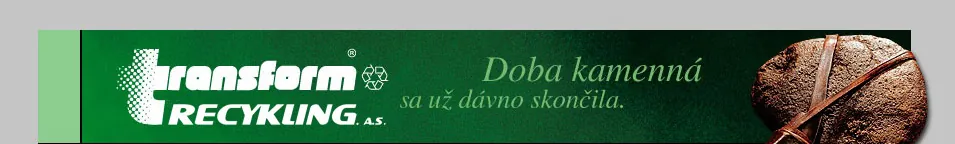
Plastová zatrávňovacia dlažba

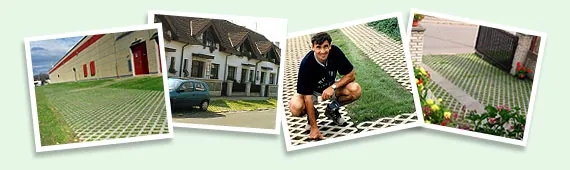

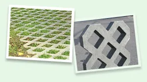
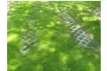
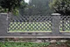
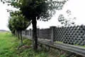
Je vyrobená z TRAPLASTu, ktorý svojimi vlastnosťami určuje jej nesporné prednosti. Tými sú najmä hrúbka (iba 40-60 mm), ktorá minimalizuje pred inštalovaním nutné zemné práce. Hmotnosť je 4 × nižšia ako pri betóne. Znižuje náklady na dopravu, prácnosť, ale aj fyzickú záťaž pri vlastnom kladení. Dlažba nenavlhne, preto v lete neodoberá zeleni potrebnú vlahu a zatrávnené plochy sú naozaj zelené.
V zime potom nepremrzne, ani nepraská. Jednoduchá opracovateľnosť umožňuje presne vytvárať aj náročné okrajové tvary, napr. okolo kanalizačných šácht, uzáverov vody, stĺpov verejného osvetlenia a pod..
Dlažba je ideálna pre spevnenie príchodových ciest, dvorov, ale aj parkovísk a odstavných plôch. Dlažba spĺňa príslušnú STN a vďaka svojej pružnosti je ešte pevnejšia ako dlažba betónová. Dlažba Lite - má hrúbku iba 4 cm a je určená len pre zaťaženie osobnými vozidlami.
Cenovo výhodný výrobok!
Zatrávňovacia dlažba Lite, 60 x 40 x 4 cm *
Zatrávňovacia dlažba VD600+, 60 x 40 x 6 cm
Zatrávňovacia dlažba VD800+, 80 x 60 x 6 cm
Zatrávňovacia dlažba VD1200+, 120 x 80 x 6 cm
Záhradné nášľapné dielce

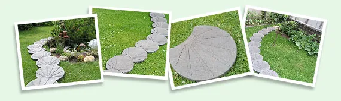

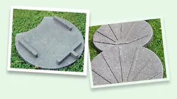
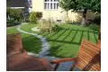
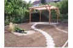
Originálne, oku lahodiace tvarové riešenie plastového nášľapného dielca umožňuje jednoducho a rýchlo vytvárať spevnené cestičky najrôznejších úprav v záhradách a parkoch. Tri robustné výstupky na spodnej strane dielca zabezpečujú dokonalé zafixovanie v teréne. Ukladanie dielcov nevyžaduje žiadne väčšie terénne úpravy, a preto je fyzicky nenáročné. Záleží len na Vašej fantázii, či vytvoríte cestu rovnú, alebo krásne sa kľukatiacu naprieč Vašou záhradou. Vždy bude dotvárať jej neopakovateľný ráz. Nášľapný dielec je vyrobený z materiálu TRAPLAST, ktorý svojimi vlastnosťami určuje jeho nepopierateľné prednosti - nehnije, nekoroduje, neabsorbuje vlhkosť, je farebne stály, a preto nevyžaduje žiadnu údržbu. Plastový záhonový chodník a obrubník

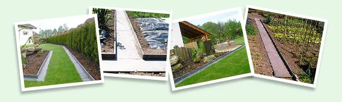

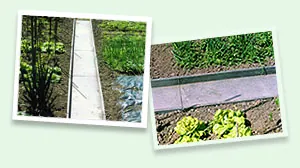
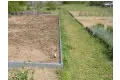
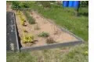
Použitie chodníkov je neoceniteľné pri budovaní cestičiek medzi záhonmi, v záhrade alebo v skleníkoch. Cestičky nevyžadujú údržbu. Sú stále čisté a bez burín, pretože užívateľská plocha chodníka je z plastovej dosky. Nezanedbateľnou výhodou je, že zvýšený okraj chodníka vytvára po oboch stranách aj záhonový obrubník. Chodník je po celej dĺžke vybavený fixačnými rebrami a čelá, zámkami. Preto chodníky dobre držia smer a ohraničenie záhonov je bezchybné. Chodníky možno zaťažovať ľubovoľnou záhradnou technikou bez obáv z poškodenia. Vlastné kladenie je veľmi jednoduché a fyzicky nenáročné. Pri zmene dispozícií záhonov je možné všetko bez problémov vybrať a použiť znovu na inom mieste. Vzhľadom na dobrú opracovateľnosť možno jednoducho vytvárať aj križovatky chodníkov. Plastový obrubník plne nahrádza klasické betónové obrubníky, je ľahší a dá sa tvarovať. Je taktiež vybavený čelnými zámkami. Záhonový chodník 360 x 115 mm, 1,2 m
Zahradný obrubník 180 x 30 mm, 1,2 m
Zahradný obrubník 240 x 30 mm, 1,2 m
Lemovací obrubník 150x115 mm, 1,2 m Ľahký plotový základ

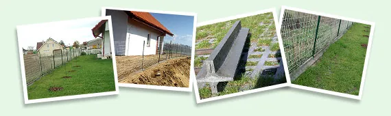

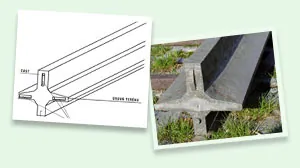
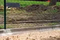
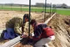
Konštrukčne je plastový plotový základ riešený veľmi účelne. Jeho použitie je jednoduché a praktické vďaka tomu, že podzemná časť základu je tvorená fixačným rebrom, ktoré stabilizuje jeho polohu v teréne. Vzájomnému vychýleniu jednotlivých dielov bránia čelné zámky. Krycie krídla umiestnené na oboch pozdĺžnych stranách základu, vytvárajú plochy bez trávy a buriny. Vďaka tomu je možné na kosenie plôch blízko plota využívať všetky typy trávnych kosačiek bez obmedzenia. Úplne odpadá nutnosť ručného dočisťovania. Základ tiež bráni vnikaniu pôdnej vlhkosti do oplotenia. Zvýšená nadzemná časť zaisťuje, že sú plotové polia uložené nad terénom a sú tak chránené pred pôdnou vlhkosťou. Zároveň sa zamedzí vniknutiu zveri na oplotený pozemok. Základ sa používa pri výstavbe pletivových a tyčkových plotov všetkých typov, aj pri opravách a údržbe, už existujúceho oplotenia. Drôtené pletivo možno prichytiť k základu najlepšie samoreznými skrutkami, čím zároveň zabránime deformácii jeho dolného okraja. Plastové plotové dosky - plotovky

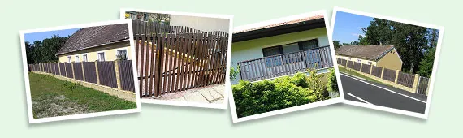
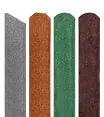
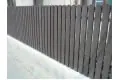
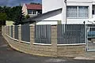
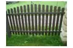
Plastové plotové dosky sú vyrábané v tradičných tvaroch ako masívne profily s príťažlivým vzhľadom. Zafarbenie priamo v hmote, má rovnako ako základný materiál TRAPLAST, mimoriadnu odolnosť voči poveternostným podmienkam, a preto sa aj po rokoch vzhľad profilov zásadne nemení. Využitie profilov pri výstavbe plotov je po všetkých stránkach veľmi výhodné - nehnijú, nekorodujú, neabsorbujú vlhkosť, sú farebne stále a preto nevyžadujú žiadnu údržbu . Profily sa dajú ľahko rezať, vŕtať a ďalej opracovávať podľa potreby, nástrojmi na kov alebo na drevo. Miesta po opracovaní nie je potrebné, vďaka spôsobu zafarbenia, povrchovo upravovať. Pri montáži plotov odporúčame používať nekorodujúce spojovacie prvky. Plotové dosky sú štandardne dodávané v hnedej farbe. Na prianie zákazníka Je možné v závislosti od požadovaného množstva zabezpečiť výrobu v sivej farbe, tehlovo červenej, čiernej, prípadne zelenej. Dodacia lehota však v tomto prípade môže presiahnuť aj 3 mesiace..
Plotová doska 78 x 21 mm, s pologuľatou hlavou
Rozmery 0,6 / 0,8 / 1,0 / 1,2 / 1,5
0,9 / 1,8 / 2,4
štandardne hnedá, na objednávku tehlová, zelená, sivá, čierna
Plotová doska 78 x 21 mm, s trojhrannou hlavou
Plotová doska 78 x 21 mm, se skosenou hlavou
Plotová doska 78x 23 mm, s polookrúhlou hlavou
Plotová doska 78x 23 mm, s trojhrannou havou
Plotová doska 79 x 35 mm, polkruhový profil
Plotová doska 50 x 30 mm
Plastové profily

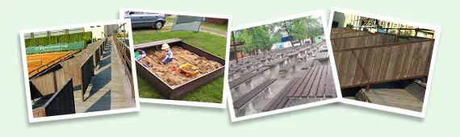

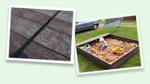
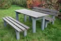
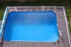
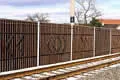
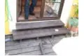
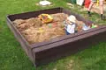
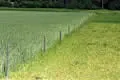
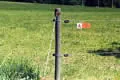
Plastové dosky sa používajú pri stavbe pastierskych areálov, výbehov a ohrád pre kone, oplotenia najrôznejších druhov, pergol, lavičiek, kompostov, drevární a podobne. Ďalej v dopravnom staviteľstve ako prvky protihlukových stien, zábran proti padajúcim skalám a palisád. Používané sú aj pre výstavbu mestského mobiliára a v parkovej architektúre. Dosky majú vynikajúcu odolnosť proti poveternostným vplyvom, vlhkosti, hnilobe, plesniam, hubám, cudzopasníkom a bežným chemikáliám. Sú nenasiakavé, majú ľahko čistiteľný povrch a nevyžadujú ani z dlhodobého hľadiska žiadnu údržbu. Dajú sa ľahko rezať, vŕtať, spájať skrutkami a opracovávať bežnými nástrojmi na kov prípadne na drevo. Pri ich používaní je vhodné dodržiavať odporúčané zásady práce. Profily sú štandardne dodávané v hnedej farbe. Na prianie zákazníka možno v závislosti od požadovaného množstva (min. 5 ton) zabezpečiť výrobu vo farbe sivej, tehlovo červenej, čiernej, prípadne zelenej. Dodacia lehota však v tomto prípade môže presiahnuť aj 3 mesiace. DOSKY
Doska 100 x 30 mm
Doska 130 x 30 mm
Doska 120 x 40 mm – „lavičková“
Doska 120 x 50 mm – „lavičková“
Výstuha lavičkovej dosky, pozinkovaná
PALUBOVÉ DOSKY
Palubová doska 132 x 32 mm
Palubová doska 138 x 28 mm
Palubová doska 132 x 21 mm
HRANOLY A OSTATNÉ PROFILY
Hranol 40 x 40 mm; 50 x 50 mm;
60 x 60 mm; 73 x 73 mm
Hranol 92 x 92 mm – „diamant“
Hranol 50 x 35 m
Hranol 60 x 40 mm
Hranol 80 x 40 mm
Profil 66 x 64 mm, hríb
KOLY
Kôl priemer 65 mm
Kôl priemer 80 mm
Kôl priemer 98 mm
Plastové platne

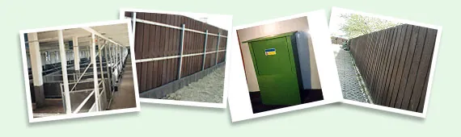
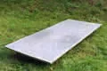
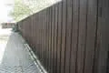
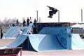
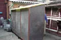
Platne hladké sa používajú najmä v poľnohospodárstve a stavebníctve napríklad ako deliace steny a obklady na steny do stajní alebo ohrady pre ošípané. Ďalej pre výstavbu skateboardových prekážok alebo ako ochrana podlahových krytín pri rekonštrukciách objektov a v mnohých ďalších podobných prípadoch. V kombinácii s plastovými profilmy sú vhodné ako stavebný materiál pre najrôznejšie účely, napríklad kompostéry, králikárne a pod. Platne s dezénom sa používajú predovšetkým v stavebníctve ako materiál na výstavbu protihlukových bariér alebo rôznych typov plného oplotenia. Na dlhšej strane sú tieto platne vybavené polodrážkou, vďaka ktorej sú vybudované ploty dokonale nepriehľadné. Ich nespornou výhodou je rýchla a jednoduchá montáž bez nutnosti použitia akýchkoľvek mechanizačných prostriedkov. Všetky druhy platní je možné formátovať podľa priania zákazníka. Ich ďalšie spracovanie je možné pomocou nástrojov na kov prípadne na drevo. Platňa hladká 1 500 x 800 x 17 mm - sivá
Platňa hladká 2 000 x 800 x 20 mm - sivá
Platňa plotová s dezénem 1 500 x 800 x 30 mm
Platňa plotová s dezénem 2 000 x 800 x 30 mm Platňa ryhovaná-terasová

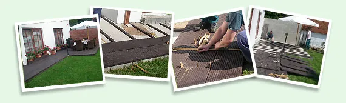

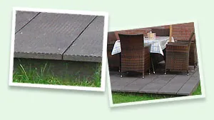
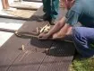
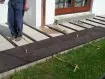
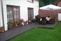
Aj tieto platne sú vyrábané z Traplastu a slúžia na vytváranie najrôznejších plôch, ako sú terasy, balkóny, reštauračné záhradky, mólové a záhradné chodníky, plochy okolo bazénov a podobne. Platne majú vynikajúcu odolnosť proti poveternostným vplyvom, hnilobe a vlhkosti. Majú prírodný vzhľad a vyznačujú sa dlhou životnosťou. Plne tak nahrádzajú podobné výrobky z exotických drevín. Obe strany dosiek sú vybavené odvodňovacím ryhovaním, ktoré sa odlišuje svojou hustotou a tvarom, čo poskytuje možnosť voľby vzhľadu realizovanej plochy.
Platňa ryhovaná – terasová, 1500 x 140 x 30 mm
Platňa rýhovaná – terasová, 1500 x 330 x 30 mm Plastové káblové žľaby

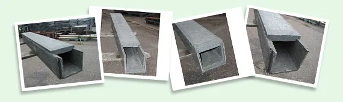

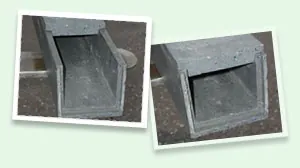
Plastové káblové žľaby sa skladajú z vlastného žľabu a veka. Sú vyrobené z TRAPLASTu, teda zo starostlivo recyklovaných zmesových plastov s prevažným obsahom polyolefínov. Vďaka vlastnostiam tohto materiálu sú odolné voči poveternostným vplyvom, bežným kyselinám a lúhom, benzínu, minerálnym olejom a ďalším chemikáliám. Vynikajú veľmi vysokou mechanickou odolnosťou. Žľaby sa používajú v bežných podmienkach pri kladení silových káblov (NN aj VN) a telekomunikačných káblov, ako ich ochrana pred mechanickým poškodením vo všetkých prípadoch stanovených STN 341050. Jednotlivé žľaby sú opatrené zámkami. Pri ukladaní musia byť zámky do seba riadne zasunuté a veká položené tak, aby v pozdĺžnom smere prekrývali zámkové spoje vlastných žľabov. Použitie plastových žľabov prináša mnoho výhod ako sú: výrazne nižšia hmotnosť proti betónovým výrobkom, výrazne vyššia mechanická odolnosť proti tenkostenným plastovým žľabom, ľahká manipulácia, zvýšenie produktivity a bezpečnosti práce, zníženie nákladov na dopravu a iné. K žľabom sú k dispozícii príslušné certifikáty a výsledky testov. žľab malý 100 x 100 mm, 1,2 m
veko malé 100 x 100 mm, 1,2 m
žľab stredný 130 x 130 mm, 1,2 m
veko stredné 130 x 130 mm, 1,2 m
žľab veľký 200 x 130 mm, 1,2 m
veko veľké 130 x 130 mm, 1,2 m Stiahnuť PDF
Katalóg produktov 2015.pdf Stiahnuť PDF